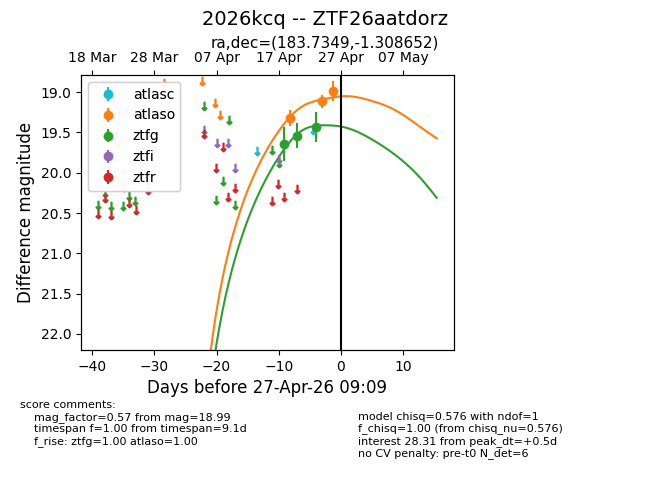
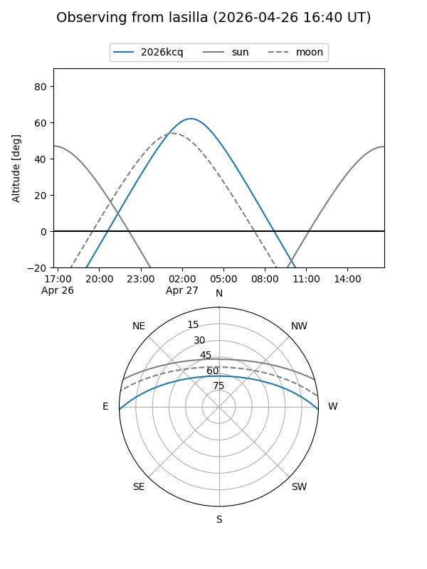
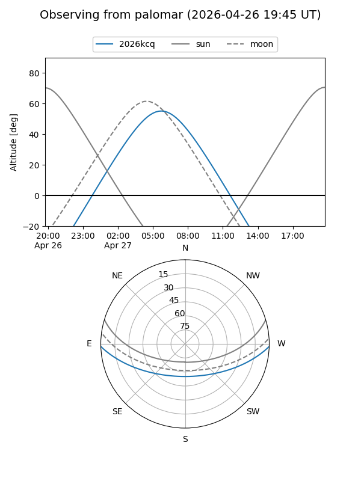
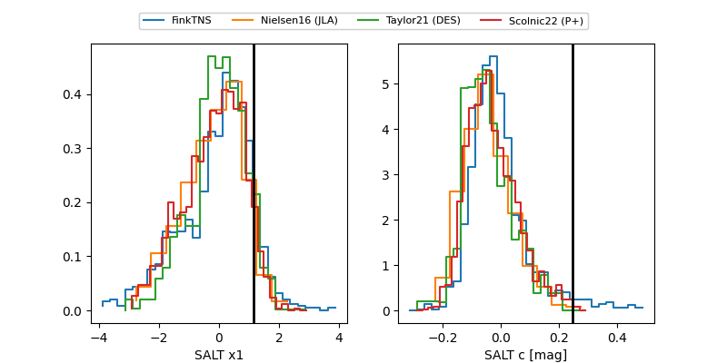

2026kcq
Target 2026kcq at 2026-04-27 09:10
Aliases and brokers:
FINK: link
Lasair: link
ALeRCE: link
TNS: link
YSE: link
alt names
ZTF26aatdorz (ztf,fink_ztf)
2026kcq (tns,yse)
Coordinates:
equatorial (ra, dec) = 183.7349,-1.30865
equatorial (HMS+DMS) = 12:14:56.36,-01:18:31.15
galactic (l, b) = (284.3071,+60.23661)
Flags:
Photometry:
last atlaso=18.99, ztfg=19.43
3 atlaso, 3 ztfg detections
Lightcurve

Visibility


Additional plots
